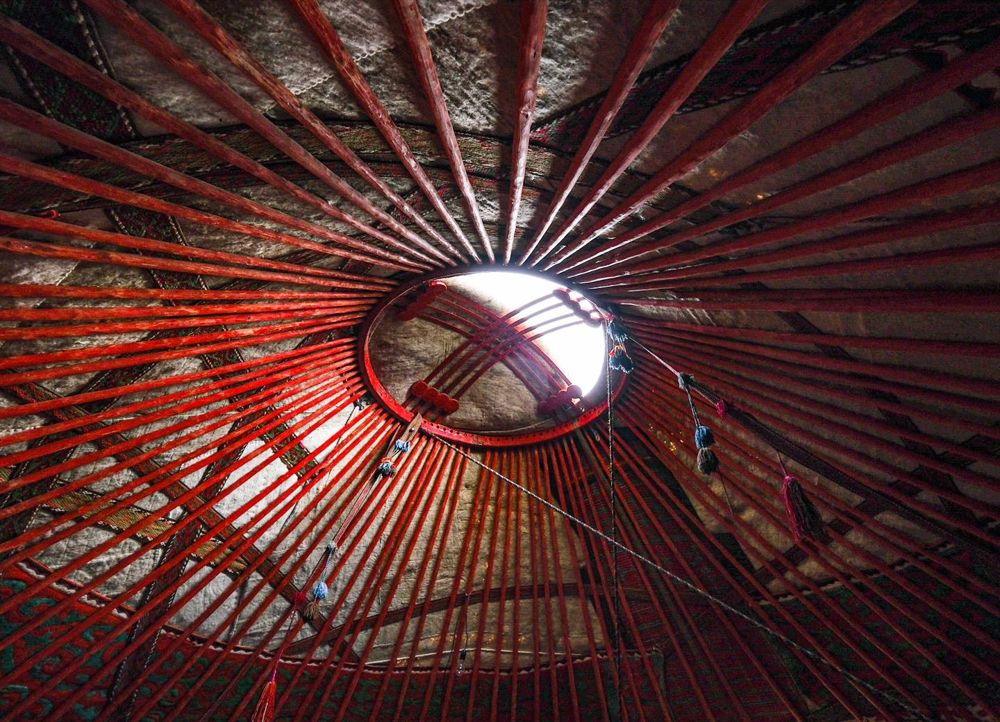
The Circle in the Sky: Why the Yurt Crown Is on Kyrgyzstan’s Flag
Lie on your back in a Kyrgyz yurt and look up: the wooden ring above you, the tündük, is a family heirloom, a symbol of home and the centre of the national flag.
Read the story →The Circle in the Sky: Why the Yurt Crown Is on Kyrgyzstan’s Flag
Lie on your back in a Kyrgyz yurt and look up: the wooden ring above you, the tündük, is a family heirloom, a symbol of home and the centre of the national flag.
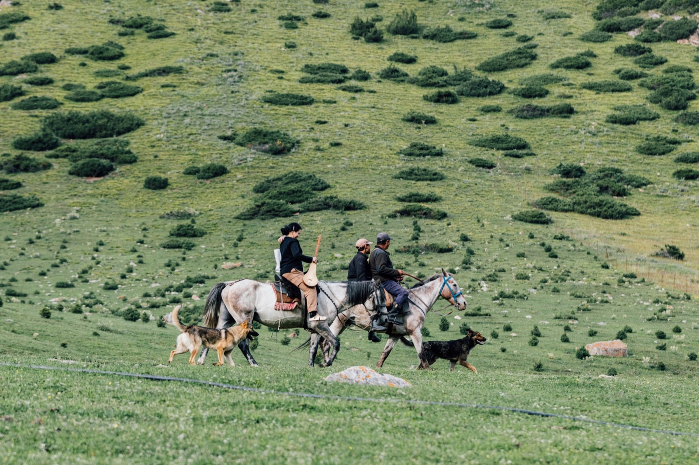
Manas: The Epic Kyrgyz Storytellers Recite From Memory
One of the longest epic poems in the world, passed down by heart for generations: the story of Manas, the manaschi who perform it, and where you’ll still meet the hero in Kyrgyzstan today.
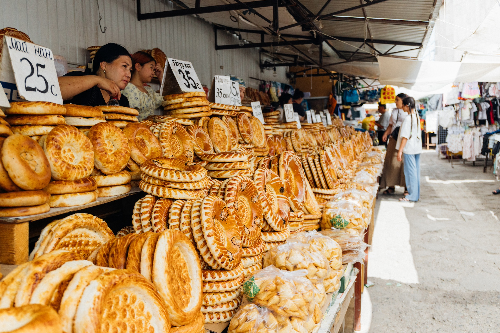
A Morning at Osh Bazaar: Bread, Dried Fruit and Bishkek Life
Bishkek’s biggest market is noisy, colourful and delicious. What to try, what to buy and how to shop like a local at Osh Bazaar.
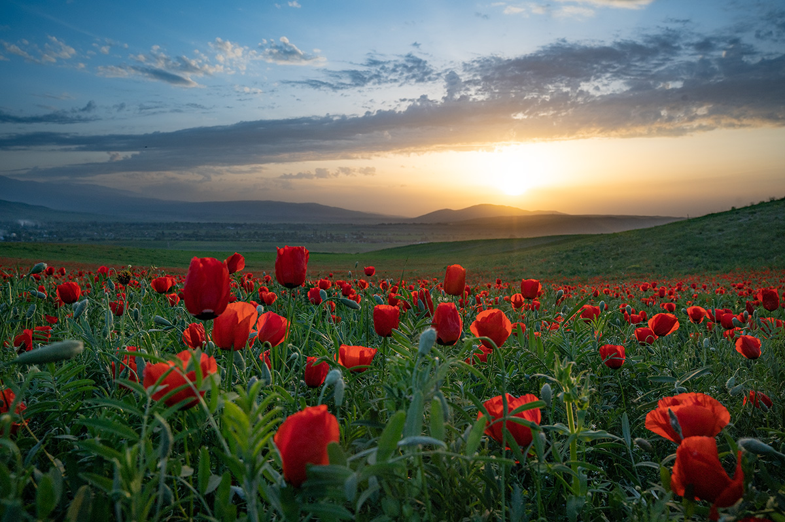
Poppies, Pastures, Gold and Snow: Kyrgyzstan Through Four Seasons
When is the best time to visit Kyrgyzstan? A season-by-season guide: poppy fields in spring, high pastures in summer, golden valleys in autumn and snowy mountains in winter.
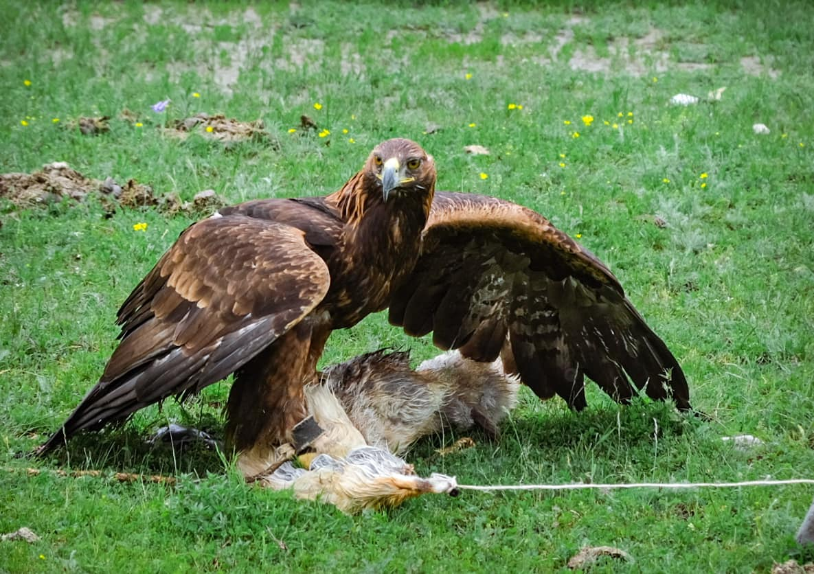
Eagle, Hound and Bow: The Ancient Hunting Partnership of the Kyrgyz
For centuries, Kyrgyz hunters worked with golden eagles, swift taigan hounds and the bow. Meet the berkutchi, learn how an eagle is trained, and see where the tradition lives on.
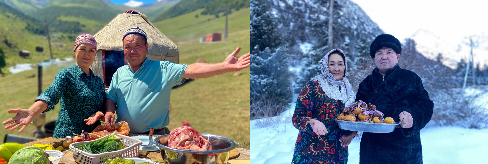
15 Kyrgyz Words to Learn Before Your Trip
A few words of Kyrgyz open every door. Greetings, thank-yous and the words you’ll hear every day in the mountains, from jailoo and kymyz to the meaning behind Issyk-Kul.
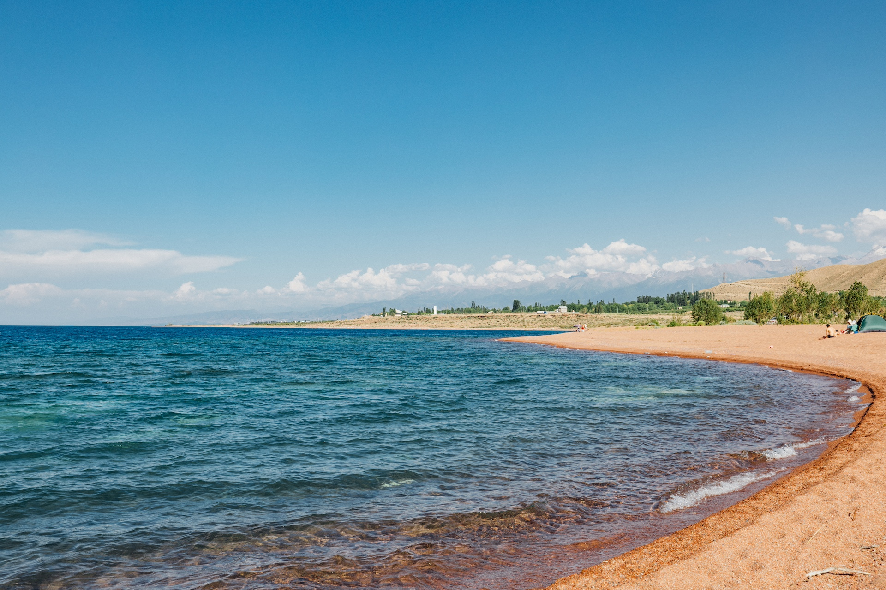
Issyk-Kul vs. Song-Kul: Which Lake Should You Visit?
Issyk-Kul or Song-Kul? Altitude, highlights, access and seasons compared, to help you decide in the simplest way which Kyrgyz lake to visit.
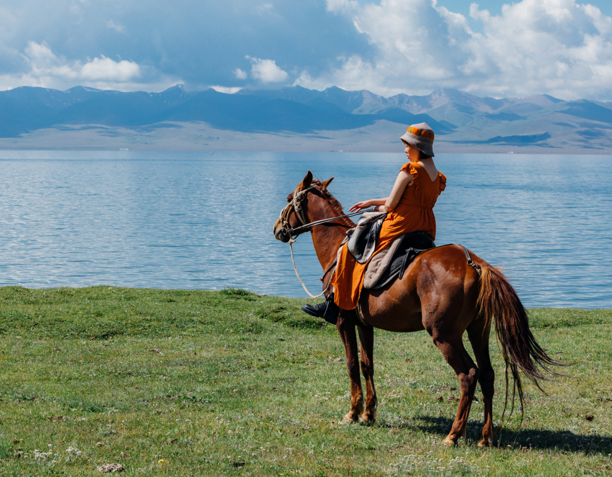
Mongolian Altai vs. Kyrgyzstan: A Complete Comparison of Mountain-Steppe Adventures
Landscapes, travel experience, wildlife and access: the Mongolian Altai and Kyrgyzstan both have mountains and steppe, but traveling them is completely different. Which suits you better?
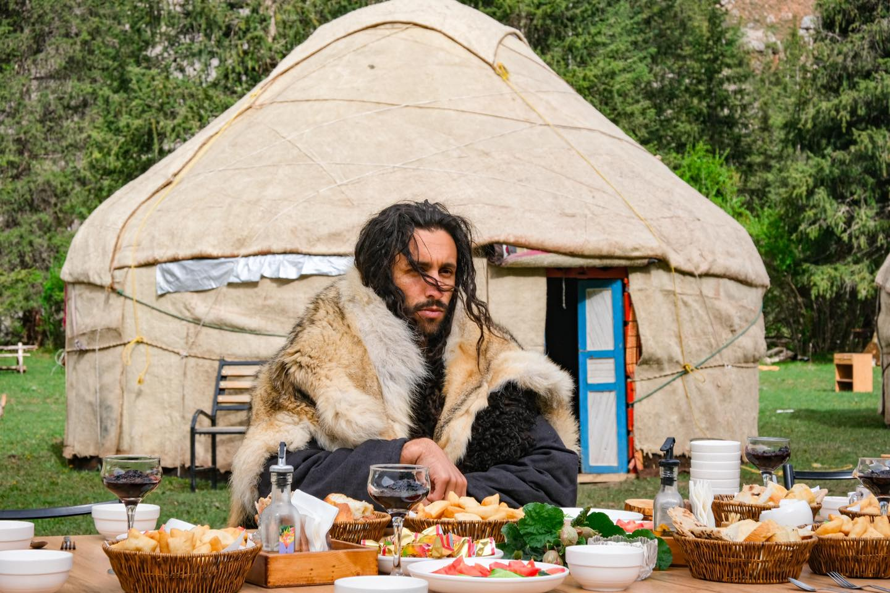
Do Kyrgyz Nomads Live in "Mongolian Yurts" Too?
Do Kyrgyz nomads live in
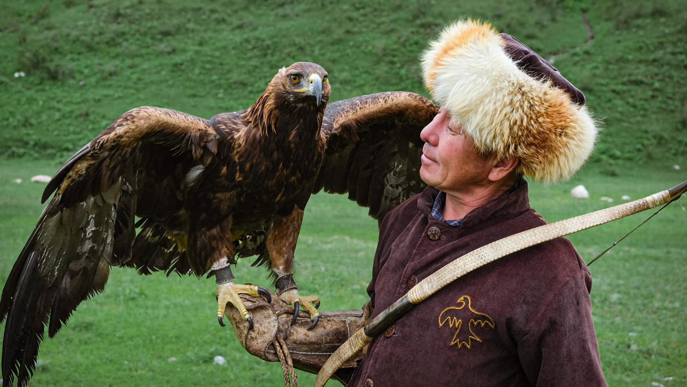
Discovering Kyrgyzstan: A Thrilling, Moving Day with Traditional Eagle Hunters
Meeting a Kyrgyz eagle hunter and his golden eagle: a hunting demonstration, holding the eagle ourselves, and the bond passed down between hunter, eagle and son.
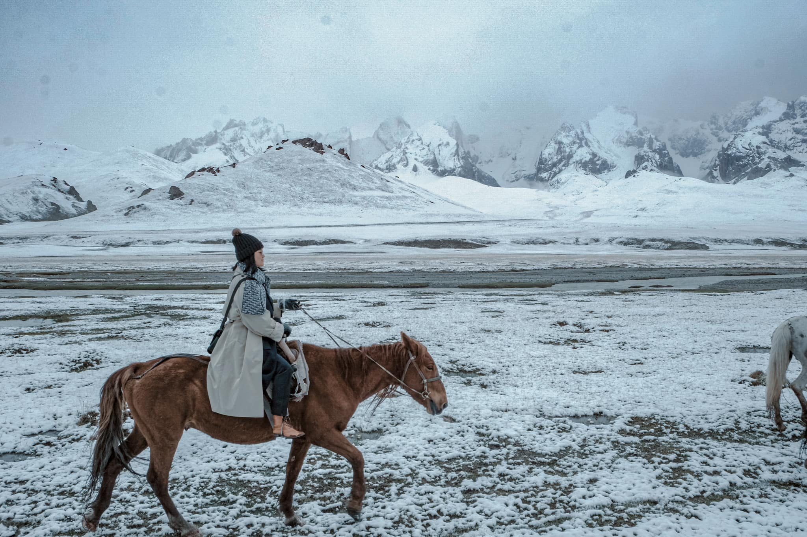
The Best Ride of My Life in Kyrgyzstan, the "Switzerland of Central Asia"
Leaving at 5:30 am, twelve hours on the road, and the next day a ride through May snow to Kel-Suu Lake, above 3,000 m: an unforgettable mountain ride.
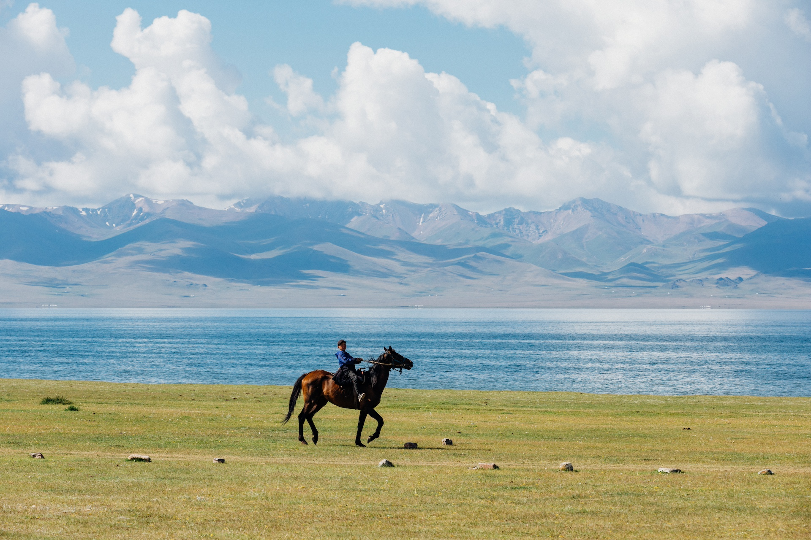
Riding to Song-Kol: 8 days in the highlands
Eight lessons from our latest 8-day loop to Song-Kul: slow pacing, cozy yurt nights, horses matched to every rider, family-style food, and the best light of the trip.
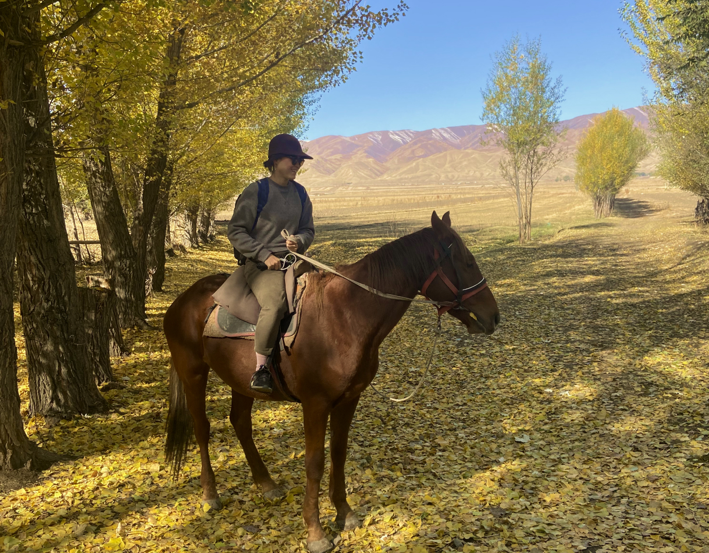
An Autumn Ride in Kyrgyzstan
Published in the first issue of the travel magazine La Listo: through golden forests, a picnic in the snow and more than five hours on horseback. Ruby's autumn ride in Kyrgyzstan.

Five Things You Must Do in Kyrgyzstan
Ride across the steppe, walk into the mountains, eat beshbarmak, melt in local hospitality, and spend a night in a yurt under the stars: five things you must do in Kyrgyzstan.
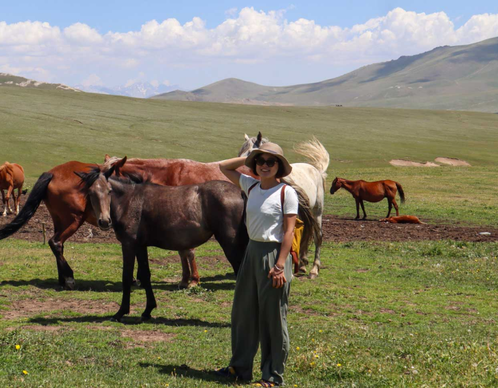
From the Office to the Tien Shan: My Journey to a Free Life
Leaving the office at 25, founding Little OH!, backpacking through more than thirty countries, and finally a wedding at the foot of the Tien Shan, arriving on horseback: Ruby's journey to a free life.
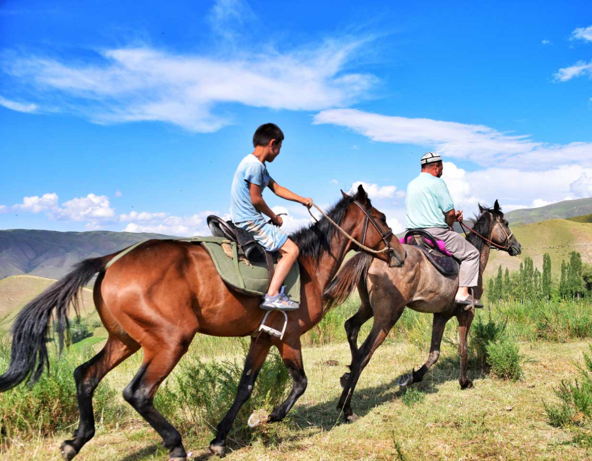
Visiting Kyrgyzstan: Independent Travel or a Group Tour?
Language, roads, hiking safety and travel information: Ruby, who has traveled independently through more than 30 countries, explains the real challenges of traveling Kyrgyzstan on your own, and how to choose what suits you.
No articles match this filter yet.